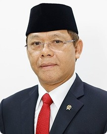
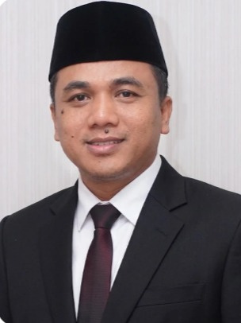
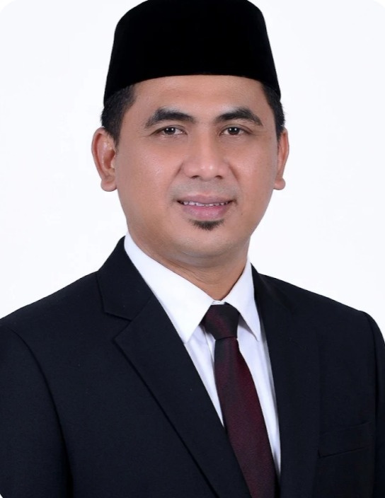
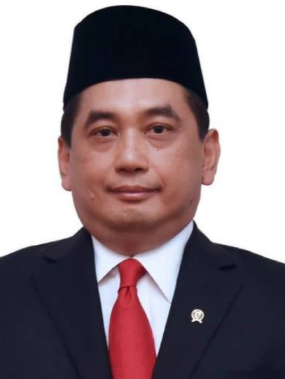
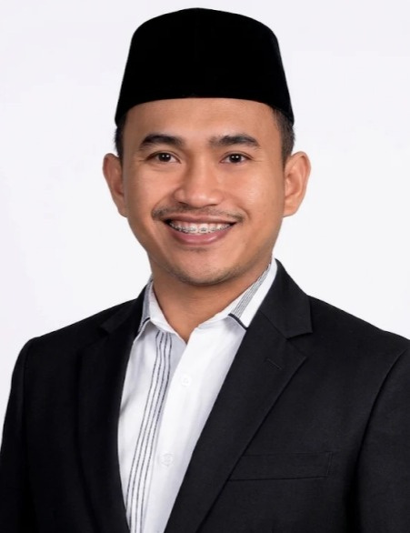
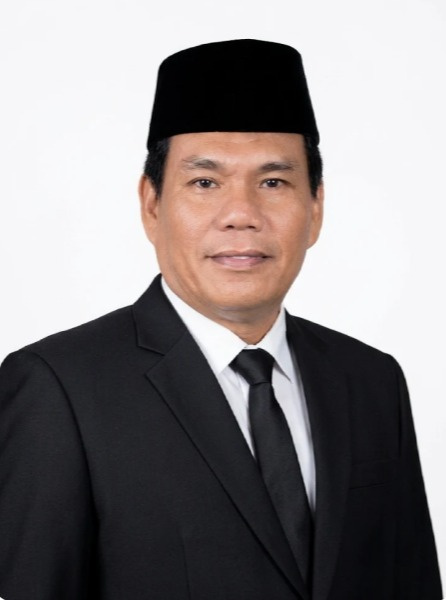
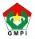

Latar pembentukan
PPP dibentuk melalui penggabungan empat partai politik Islam pada 1973 sebagai bagian dari penyederhanaan sistem kepartaian Indonesia.
Berakar pada Nilai, Bergerak untuk Rakyat.
TENTANG PPP
Mengenal lebih dekat Partai Persatuan Pembangunan melalui sejarah, nilai perjuangan, visi, misi, serta komitmennya dalam kehidupan berbangsa dan bernegara.
IDENTITAS ORGANISASI
Partai Persatuan Pembangunan (PPP) merupakan partai politik Indonesia yang didirikan pada 5 Januari 1973. PPP lahir dari penggabungan empat partai politik Islam dan menjadikan nilai-nilai keislaman sebagai landasan perjuangan organisasi.
Dalam perkembangannya, PPP memperjuangkan berbagai isu yang berkaitan dengan kehidupan masyarakat, mulai dari ekonomi kerakyatan, pendidikan, kesejahteraan sosial, hingga penegakan hukum dan demokrasi.
Dengan mempertahankan identitas keislaman, PPP berupaya membangun komunikasi yang terbuka, memperkuat persatuan, serta memperjuangkan kepentingan masyarakat dalam kehidupan berbangsa dan bernegara.

Partai Persatuan Pembangunan didirikan pada 5 Januari 1973 melalui penyatuan empat partai politik Islam, yaitu Nahdlatul Ulama (NU), Partai Muslimin Indonesia (Parmusi), Partai Syarikat Islam Indonesia (PSII), dan Persatuan Tarbiyah Islamiyah (Perti). Sejak berdiri, PPP telah melalui berbagai dinamika politik nasional, mulai dari masa Orde Baru, Reformasi, hingga perkembangan demokrasi Indonesia.
PPP dibentuk melalui penggabungan empat partai politik Islam pada 1973 sebagai bagian dari penyederhanaan sistem kepartaian Indonesia.
PPP berpartisipasi dalam kehidupan politik nasional dan menghadapi berbagai perubahan sistem pemerintahan serta dinamika demokrasi.
PPP mempertahankan nilai-nilai keislaman sebagai identitas perjuangan, dengan lambang Ka'bah yang menjadi simbol khas organisasi.
ARAH DAN NILAI PERJUANGAN
Terwujudnya masyarakat yang bertakwa kepada Allah SWT dan negara Indonesia yang adil, makmur, sejahtera, bermoral, demokratis, tegaknya supremasi hukum, penghormatan terhadap Hak Asasi Manusia (HAM), serta menjunjung tinggi harkat dan martabat kemanusiaan dan keadilan sosial yang berlandaskan nilai-nilai keislaman.
Menempatkan nilai keimanan dan ketakwaan sebagai landasan moral dalam kehidupan bermasyarakat, berbangsa, dan bernegara.
Menghormati hak dan martabat manusia, menjunjung keadilan, serta menolak diskriminasi melalui nilai ukhuwah basyariyah.
Menjaga keutuhan bangsa dengan memperkuat ukhuwah wathaniyah dan membangun keharmonisan dalam keberagaman.
Mewujudkan kehidupan politik yang demokratis dengan mengutamakan kedaulatan rakyat dan musyawarah untuk mufakat.
Mewujudkan masyarakat yang adil dan sejahtera melalui pemerataan kesempatan serta pengurangan kesenjangan ekonomi, sosial, dan budaya.
KEPEMIMPINAN & STRUKTUR ORGANISASI
Struktur kepemimpinan Partai Persatuan Pembangunan disusun untuk mendukung koordinasi organisasi, pelaksanaan kebijakan, serta penyaluran aspirasi masyarakat di berbagai tingkatan.
DPP PPP 2025–2030 · Referensi susunan inti per 6 Oktober 2025

Ketua Umum
Memimpin arah kebijakan dan koordinasi organisasi partai di tingkat nasional.

Wakil Ketua Umum
Mendampingi Ketua Umum dalam koordinasi dan pelaksanaan agenda organisasi.

Sekretaris Jenderal
Mengoordinasikan kesekretariatan, administrasi, dan komunikasi organisasi.

Wakil Sekretaris Jenderal
Membantu Sekretaris Jenderal dalam administrasi dan koordinasi kepengurusan.

Bendahara Umum
Mengoordinasikan pengelolaan keuangan dan pelaporan keuangan organisasi.

Wakil Bendahara Umum
Membantu Bendahara Umum dalam administrasi dan pelaporan keuangan partai.
TENTANG PPP · PEMETAAN AKADEMIK
Mengenal berbagai pemangku kepentingan yang memiliki peran dan hubungan dengan Partai Persatuan Pembangunan.
Internal organisasi, ruang publik, dan akar sejarah dalam satu pemetaan.
01 / EKOSISTEM
Pemetaan peran dan ruang interaksi PPP, bukan pernyataan afiliasi atau dukungan pihak eksternal.
Penggerak organisasi
Wadah partisipasi kader
Dialog keumatan
Hubungan kelembagaan
Informasi dan kajian
Aspirasi dan partisipasi
Garis menunjukkan kategori hubungan dalam pemetaan akademik, tidak menunjukkan hubungan komando.
02 / INTERNAL ORGANISASI
Unsur organisasi yang menjalankan tata kelola, kaderisasi, dan representasi politik PPP.
DPP, DPW, DPC, PAC, Ranting.
Mengelola organisasi dari tingkat pusat hingga basis.
Pertimbangan organisasi.
Memberikan nasihat dan pertimbangan bagi organisasi.
Kaderisasi.
Mengikuti pendidikan politik serta menggerakkan kegiatan partai.
Organisasi sayap.
Mewadahi partisipasi dan pengembangan kelompok kader.
Perselisihan internal.
Menangani penyelesaian perselisihan internal sesuai ketentuan partai.
Representasi masyarakat.
Menyalurkan aspirasi melalui anggota legislatif dari PPP.
03 / WADAH PARTISIPASI
Badan otonom sebagai ruang pengembangan kader perempuan dan generasi muda.
Wanita Persatuan Pembangunan
Wadah kader perempuan untuk pendidikan politik, pemberdayaan, dan partisipasi dalam kehidupan publik.
Gerakan Pemuda Ka'bah
Wadah pengembangan kader muda serta partisipasi pemuda dalam kegiatan organisasi dan sosial.

Generasi Muda Pembangunan Indonesia
Wadah generasi muda untuk kaderisasi, pendidikan politik, dan pengembangan kepemimpinan.
Angkatan Muda Ka'bah
Wadah kader muda untuk mengembangkan kepemimpinan, jejaring, dan pengabdian kepada masyarakat.
Identitas visual organisasi sayap mengikuti referensi desain akademik. Logo perlu diverifikasi kembali sebelum digunakan dalam publikasi resmi.
04 / RELASI DI RUANG PUBLIK
Pilih kategori untuk mengenal perannya. Hubungan bersifat kelembagaan dan sosial, bukan afiliasi politik.
Menyelenggarakan pemilu serta proses administrasi dan tahapan kepesertaan partai.
Mengawasi penyelenggaraan pemilu dan menangani dugaan pelanggaran sesuai kewenangannya.
Memeriksa dan memutus perselisihan hasil pemilu sesuai kewenangan konstitusional.
Menjalankan administrasi badan hukum partai politik sesuai peraturan.
Berperan dalam pendidikan keagamaan, penyampaian pandangan, dan dialog mengenai kehidupan sosial.
Lembaga pendidikan keagamaan yang berperan dalam pembelajaran dan pengembangan masyarakat.
Menyelenggarakan kegiatan sosial, pendidikan, serta pelayanan keagamaan secara independen.
Berpartisipasi dalam dialog sosial dan pembahasan isu keagamaan di ruang publik.
Menyampaikan aspirasi, kebutuhan, serta penilaian terhadap isu dan kebijakan publik.
Berperan dalam kegiatan sosial dan menyampaikan kebutuhan masyarakat di tingkat lokal.
Memberikan kajian, masukan, kritik, serta pengawasan independen terhadap kebijakan publik.
Menjadi bagian dari pemangku kepentingan dalam pembahasan ekonomi dan kesejahteraan masyarakat.
Berinteraksi dalam sistem demokrasi, pembahasan kebijakan, dan dinamika politik nasional.
Menyampaikan informasi, pemberitaan, dan pengawasan terhadap aktivitas politik secara independen.
Menjadi ruang penyebaran informasi dan diskusi publik mengenai berbagai isu masyarakat.
Memberikan analisis dan penilaian independen mengenai perkembangan politik dan organisasi.
05 / AKAR HISTORIS
PPP lahir melalui fusi empat partai politik Islam pada 5 Januari 1973.
Nahdlatul Ulama
Partai Muslimin Indonesia
Partai Syarikat Islam Indonesia
Persatuan Tarbiyah Islamiyah
5 Januari 1973 · Fusi empat partai
Referensi pemetaan: materi sejarah PPP dan desain prototipe akademik Digital Public Relations.